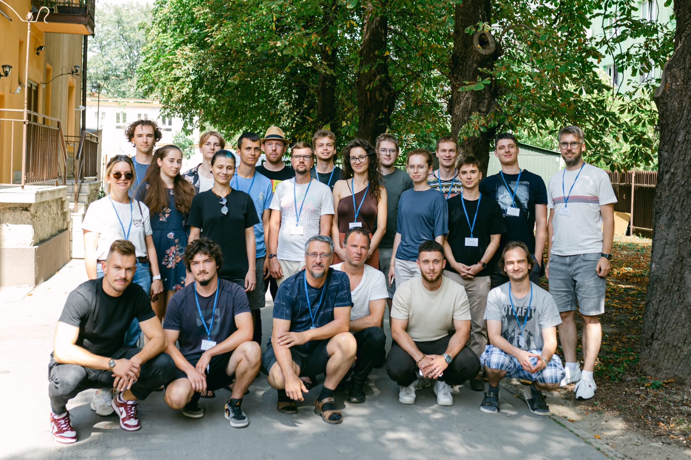

For the Public · Public events
SPACE::LAB Summer School
An annual three-day summer school where students work on real space data with the researchers who produce it. Every edition since 2019 has paired a space-science question with the computing and machine learning needed to answer it — from machine learning on space data to artificial intelligence running on board the satellite itself.
Archive
8 editions
Newest first. Each entry lists the programme and the participants it drew.